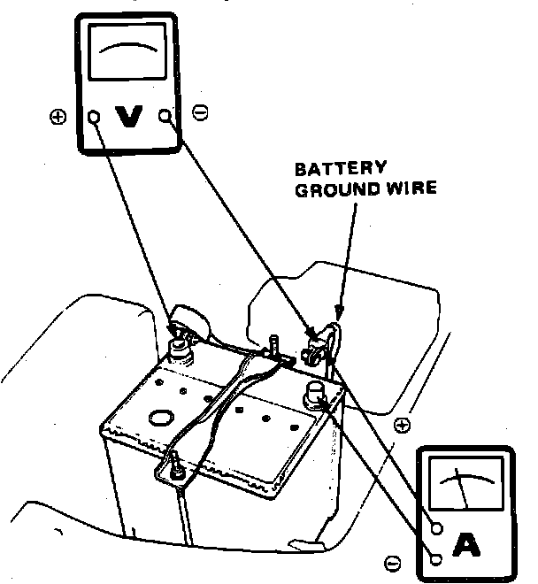
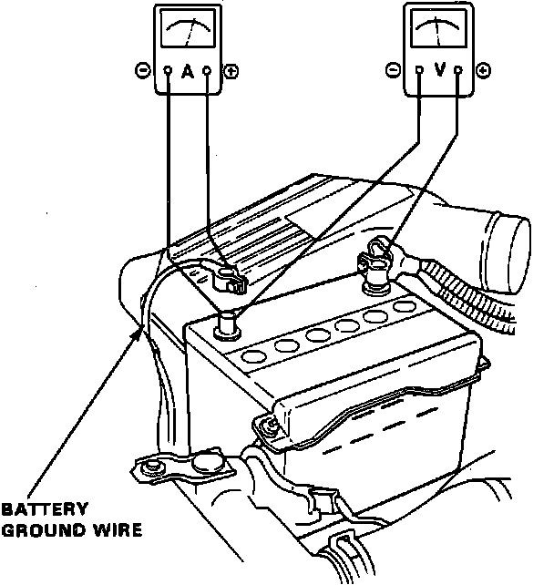
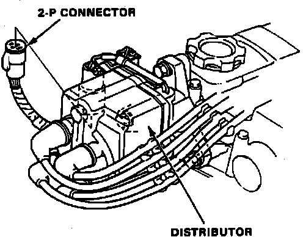
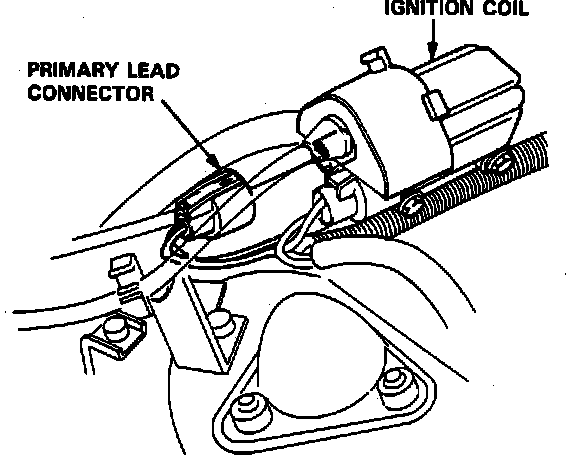
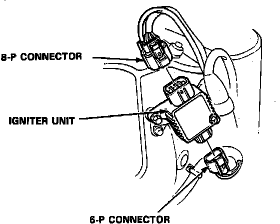
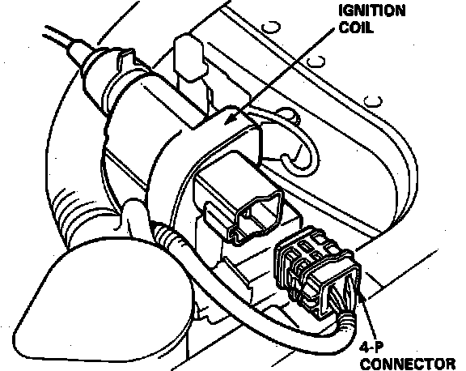

Component Tests and General Diagnostics
The air temperature must be between 59-100°F before testing.WITH STARTER SYSTEM TESTER
Connect starter system tester to manufacturers instructions.
LESS STARTER SYSTEM TESTER
Fig. 7 Starter Test Equipment Connections:

Fig. 8 Starter Test Equipment Connections:

Fig. 9 Ignition Coil Connector:

Fig. 10 Ignition Coil Connector:

Fig. 11 Igniter Unit Connectors:

Fig. 12 Ignition Coil Connector:

1. Install suitable ammeter, voltmeter and tachometer as shown in Figs. 7 and 8.
2. On Integra models, disconnect ignition coil primary lead two pole connector at distributor, Fig. 9.
3. On 1989-90 Legend models, disconnect ignition coil primary lead, Fig. 10.
4. On 1991-93 Legend models, disconnect igniter unit six and eight pole connectors, Fig. 11.
5. On Vigor models, disconnect ignition coil electrical connector, Fig. 12.
6. On all models, turn ignition switch to Start position, starter cranking should be indicated.
7. If starter does not crank, check battery, battery positive cable, ground and electrical connections for looseness or corrosion, repair, then retest.
8. If starter still does not crank, proceed as follows:
a. Disconnect starter solenoid (BLK/WHT wire) electrical connector.
b. Connect suitable jumper wire between positive battery terminal to solenoid terminal.
c. Starter cranking should be indicated.
9. If starter still does not crank, remove starter and diagnose internal problem.
10. If starter cranks, check for open in BLK/WHT wire between starter and ignition switch, then check ignition switch.
11. On models equipped with automatic transaxles, check neutral safety switch and connector.
12. On models equipped with manual transaxle, check starter relay, clutch interlock switch and electrical connector.
13. On all models, check starter cut relay and security alarm system, if equipped.
14. If the starter engages, but engine cranks erratically, remove starter motor, then inspect starter, drive gear and flywheel ring gear for damage. Check overrunning clutch for binding or slipping when armature is rotated with drive gear held.
15. Check cranking voltage and current draw, on all models except 1991-93 Legend, voltage should be no less than 8.0 volts, on 1991-93 Legend models, voltage should be no less than 8.5 volts, on all models, current should be no more than 350 amperes on all models except 1992-93 Vigor models with 2.0kw Mitsuba or Mitsubishi starters, current should be no more then 400 amps on 1992-93 Vigor models with 2.0kw Mitsuba or Mitsubishi starters.